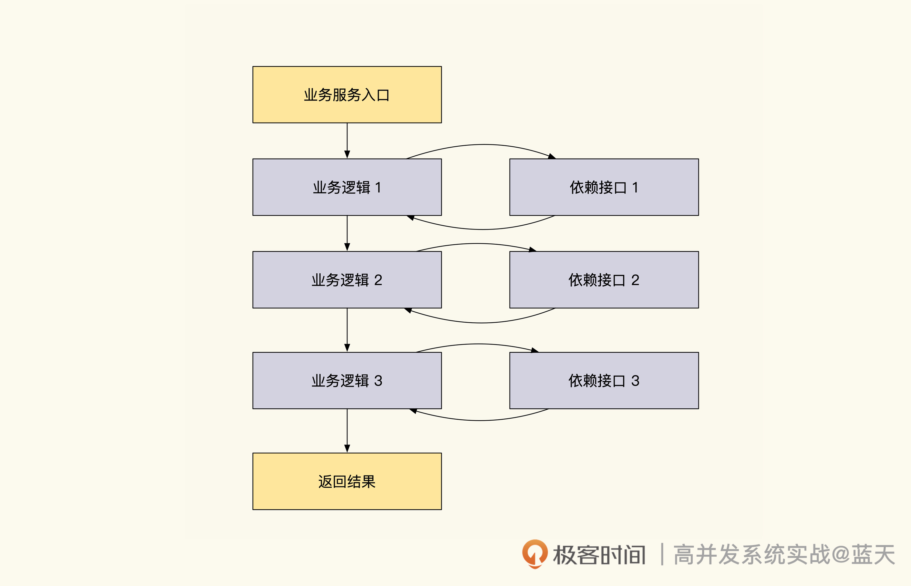
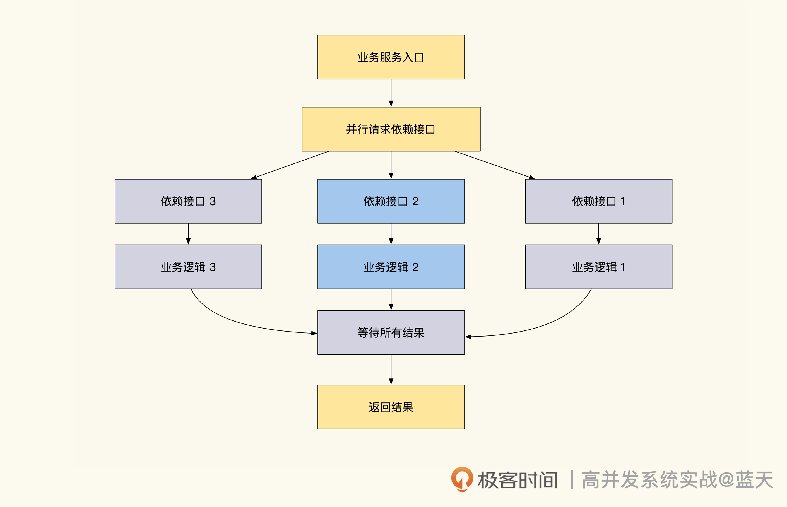
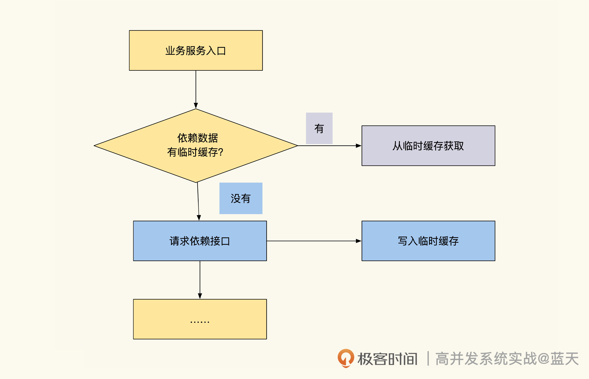
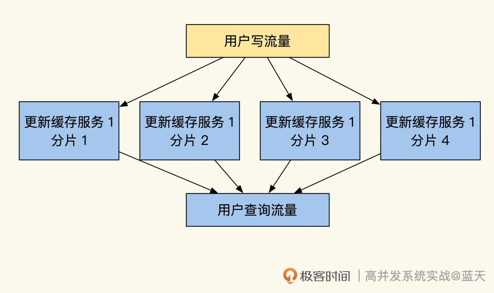

- 00 开篇词 高并发系统，技术实力的试金石.md.html
- 01 结构梳理：大并发下，你的数据库表可能成为性能隐患.md.html
- 02 缓存一致：读多写少时，如何解决数据更新缓存不同步？.md.html
- 03 Token：如何降低用户身份鉴权的流量压力？.md.html
- 04 同城双活：如何实现机房之间的数据同步？.md.html
- 05 共识Raft：如何保证多机房数据的一致性？.md.html
- 06 领域拆分：如何合理地拆分系统？.md.html
- 07 强一致锁：如何解决高并发下的库存争抢问题？.md.html
- 08 系统隔离：如何应对高并发流量冲击？.md.html
- 09 分布式事务：多服务的2PC、TCC都是怎么实现的？.md.html
- 10 稀疏索引：为什么高并发写不推荐关系数据库？.md.html
- 11 链路追踪：如何定制一个分布式链路跟踪系统 ？.md.html
- 12 引擎分片：Elasticsearch如何实现大数据检索？.md.html
- 13 实时统计：链路跟踪实时计算中的实用算法.md.html
- 14 跳数索引：后起新秀ClickHouse.md.html
- 15 实践方案：如何用C++自实现链路跟踪？.md.html
- 16 本地缓存：用本地缓存做服务会遇到哪些坑？.md.html
- 17 业务脚本：为什么说可编程订阅式缓存服务更有用？.md.html
- 18 流量拆分：如何通过架构设计缓解流量压力？.md.html
- 19 流量调度：DNS、全站加速及机房负载均衡.md.html
- 20 数据引擎：统一缓存数据平台.md.html
- 21 业务缓存：元数据服务如何实现？.md.html
- 22 存储成本：如何推算日志中心的实现成本？.md.html
- 23 网关编程：如何通过用户网关和缓存降低研发成本？.md.html
- 24 性能压测：压测不完善，效果减一半.md.html
- 答疑课堂 思考题答案（一）.md.html
- 结束语 为者常成，行者常至.md.html
- 捐赠
24 性能压测：压测不完善，效果减一半
你好，我是徐长龙。
之前我们讨论了很多高并发改造思路和设计。
高并发的系统很复杂，所以对这样的系统做并发优化也相当有挑战。很多服务的局部优化，不见得能真正优化整体系统的服务效果，甚至有的尝试还会适得其反，让服务变得不稳定。
在这种情况下，压测就显得更加重要了。通常来说，通过压测可以帮我们做很多事儿，比如确认单个接口、单台服务器、单组服务集群甚至是整个机房整体的性能，方便我们判断服务系统的瓶颈在哪里。而且根据压测得出的结果，也能让我们更清晰地了解系统能够承受多少用户同时访问，为限流设置提供决策依据。
这节课，我们就专门聊聊性能压测里，需要考虑哪些关键因素。
压测与架构息息相关
在压测方面，我们很容易踩的一个坑就是盲目相信QPS结果，误以为“接口并发高就等同于系统稳定”，但却忽视了系统业务架构的形态。
所以在讲压测之前，我们需要先了解一些关于性能与业务架构的相关知识，这能让我们在压测中更清醒。
并行优化
前面我说过，不能盲目相信QPS结果，优化的时候要综合分析。为了让你理解这一点，我们结合一个例子来看看。
我们常见的业务会请求多个依赖的服务处理数据，这些都是串行阻塞等待的。当一个服务请求过多其他服务时，接口的响应速度和QPS就会变得很差。
这个过程，你可以结合后面的示意图看一下：
- 为了提高性能，有些业务对依赖资源做了优化，通过并行请求依赖资源的方式提高接口响应速度。具体的实现请看下图：

如上图，业务请求依赖接口的时候不再是串行阻塞等待处理，而是并行发起请求获取所有结果以后，并行处理业务逻辑，最终合并结果返回给客户端。这个设计会大大提高接口的响应速度，特别是依赖多个资源的服务。
但是，这样优化的话有一个副作用，这会加大内网依赖服务的压力，导致内网的服务收到更多的瞬时并发请求。如果我们大规模使用这个技巧，流量大的时候会导致内网请求放大，比如外网是1WQPS，而内网流量放大后可能会有10W QPS，而内网压力过大，就会导致网站整体服务不稳定。
所以，并行请求依赖技巧并不是万能的，我们需要注意依赖服务的承受能力，这个技巧更适合用在读多写少的系统里。对于很多复杂的内网服务，特别是事务一致性的服务，如果并发很高，这类服务反而会因为锁争抢超时，无法正常响应。
那问题来了，像刚才例子里这种依赖较多的业务系统，什么样的压测思路才更合理呢？我的建议是先做内网服务的压测，确认了内网可以稳定服务的QPS上限之后，我们再借此反推外网的QPS应该限制在多少。
临时缓存服务
临时缓存优化也是压测里需要特殊应对的一种情况，其实我们早在第二节课就提到过。
临时缓存通常会这样实现，示意图如下所示：- 
结合上图，我们可以看到，接口请求依赖数据时会优先请求缓存，如果拿到缓存，那么就直接从缓存中获取数据，如果没有缓存直接从数据源获取，这样可以加快我们服务的响应速度。
在通过临时缓存优化的服务做压测的时候，你会看到同参数的请求响应很快，甚至QPS也很高，但这不等同于服务的真实性能情况，系统不稳定的隐患仍然存在。为什么这么说呢？
这是因为临时缓存的优化，针对的是会被频繁重复访问的接口，优化之后，接口的第一次请求还是很缓慢。如果某类服务原有接口依赖响应很慢，而且同参数的请求并不频繁，那这类服务的缓存就是形同虚设的。
所以这种结构不适合用在低频率访问的业务场景，压测时我们也要注意这种接口平时在线上的表现。
分片架构
接下来，我们再看看数据分片架构。下图是通过分片缓解压力的架构（我们在第18节课的时候提到过）：

数据分片架构的服务，会根据一些标识id作为分片依据，期望将请求均衡地转发到对应分片，但是实际应用时，情况不一定和预期一致。
我结合一个曾经踩过的坑和你分享经验。在线培训的业务里，当时选择了班级ID作为分片标识，10W人在线互动时，实际却只有一个分片对外服务，所有用户都请求到了一个分片上，其他分片没有太多流量。
出现这种情况主要是两个原因：第一，我们的班级id很少，这是一个很小的数据范围，所以hash的时候如果算法不够分散，就会把数据放到同一个分片上；第二，因为hash算法有很多种，不同算法计算出的结果，分散程度也不同，因此有些特征的数据计算结果不会太分散，需要我们验证选择。
为了预防类似的问题，建议你压测时，多拿实际的线上数据做验证，如果总有单个热点分片就需要考虑更换hash算法。做好这个测试后，别忘了配合随机数据再压测一次，直到找到最适合业务情况的算法（hash算法变更牵连甚广，所以选择和更换时一定要慎重）。
数据量
除了架构情况以外，数据量也是影响压测效果的重要因素。
如果接口通过多条数据来进行计算服务，就需要考虑到数据量是否会影响到接口的QPS和稳定性。如果数据量对接口性能有直接影响，压测时就要针对不同数据量分别做验证。
因为不完善的测试样例，会给大流量服务留下雪崩的隐患，为了尽可能保证测试真实，这类接口在压测时，要尽量采用一些脱敏后的线上真实数据来操作。
这里特别提醒一下，对于需要实时汇总大量数据的统计服务，要慎重对外提供服务。如果服务涉及的数据量过多，建议转换实现的思路，用预计算方式去实现。
如果我们的核心业务接口不得不提供数据统计的服务，建议更改方式或增加缓存，预防核心服务崩溃。
压测环境注意事项
了解到性能和架构的关系知识后，相信你已经有了很多清晰的想法，是不是觉得已经可以顺利上机做压测了？
但现实并非这么简单，我们还得考虑压测环境和真实环境的差异。在压测之前，要想让自己的压测结果更准确，最好减少影响的因素。
在压测前的数据准备环节，我们通常要考虑的因素包括这些方面：
- 压测环境前后要一致：尽量用同一套服务器及配置环境验证优化效果。
- 避免缓存干扰：建议在每次压测时，缓一段时间让服务和缓存过期后再进行压测，这样才能验证测试的准确性。
- 数据状态一致：要尽量保证服务用的数据量、压测用户量以及缓存的状态是一致的。
接下来，我们再看看搭建压测环境时还有哪些注意事项。
我发现很多朋友会在本地开发电脑上做压测验证，但这样很多情况是测试不出来的，建议多准备几个发起压测请求的服务器，再弄几个业务服务器接收压测请求，这样压测才更接近真实业务的运转效果。
另外，Linux环境配置我们也不能忽视。Linux内核优化配置选项里，比较常用的包括：本地可用端口个数限制、文件句柄限制、长链接超时时间、网卡软中断负载均衡、各种IO缓存大小等。这些选项都会影响我们的服务器性能，建议在正式压测之前优化一遍，在这里提及这个是因为我之前碰到过类似问题。
某次压测的时候，我们发现，业务不管怎么压测都无法超过1W QPS，为此我们写了一个不执行任何逻辑的代码，直接返回文本的接口，然后对这个接口进行基准测试压测，发现性能还是达不到1W QPS，最后把Linux配置全部升级改进后，才解决了这个问题。
线上压测及影子库
虽然线上压测更真实，但这样会在短时间内会产生大量垃圾数据，比如大量的日志、无用测试数据、伪造的业务数据，可能有大量堆积的队列，占用服务器的资源，甚至直接引起各种线上故障。压测QPS在10W以上时，压测一次制造的“数据垃圾”，相当于日常业务一个月产生的数据量，人工清理起来也非常困难。
因此，为了确保测试不会影响线上正常服务，我更推荐用影子库的方式做压测。该方式会在压测的请求里带上一个特殊的header，这样所有的数据读写请求都会转为请求压测数据库，而不是线上库。有了影子数据库，可以帮我们有效地降低业务数据被污染的风险。
全链路压测以及流量回放测试
之前讨论的压测都是单接口、单个服务的压测。但实践过程中，最常遇到的问题就是单接口压测时表现很好，但是实际生产还没到预估流量，系统就崩掉了。
出现这种问题，原因在于我们的服务并不是完全独立的，往往上百个接口共享一套数据库、缓存、队列。所以，我们检测系统服务能力要综合检测。
比如你优化了单接口A，但这条流程需要调用A、B、C三个接口，而B、C接口性能较慢或对系统资源消耗很大。那么，即便单接口A压测状况很好，但整体的服务流程性能仍然上不去。再比如，如果一个业务占用过多的公共资源，就会影响到其他共用资源的服务性能，所以压测做完单接口性能测试后，建议做全链路压测。
上面这两种情况，都可以通过全链路压测来解决，这种方式可以帮助我们将各种交叉复杂的使用情况模拟出来，帮助我们更综合地评估系统运转情况，从而找到性能瓶颈。
如何模拟“交叉复杂的使用情况”呢？建议你最好可以把多个业务主要场景，设计成并行运行的流程一起跑，比如一组vUser在浏览搜索商品，一组vUser在下单支付，一组vUser在后台点常见功能。
这种方式压测出来的性能数据，可以作为我们最忙时线上服务压力的上限，如果某个流程核心的接口压力大、响应慢的话，则会拖慢整个流程的效率，这样我们可以通过整体流程的QPS发现瓶颈点和隐患。
如果压测一段时间服务指标都很稳定，我们可以加大单个流程压测线程数，尝试压垮系统，以此观察系统可能出现的缺陷以及预警系统是否及时预警。不过这样做，需要做好修复数据库的准备。
如果业务比较复杂，人工写压测脚本比较困难，还有一个方式，就是回放线上真实用户请求进行压测。这种方式还可以用于一些特殊故障的请求场景还原。
具体可以使用tcpcopy这个工具录制线上的流量请求，生成请求记录文件后，模拟搭建录制时线上数据时的全量数据镜像，然后回放即可。
不过这个工具使用起来有一定难度，最好配合成型的压测平台工具使用。此外，我们还需要一个独立旁路服务器来压测或录制，要注意支付一类的服务不要请求到线上，否则可能会造成用户财产损失。
总结
性能压测是我们的验证我们服务改造效果、容量评估、架构合理性以及灾难演练的必备工具。
通过压测，我们会更清楚服务的运转情况和承压能力，综合分析出性能瓶颈点。每次业务出现变更，或者做了优化时，都可以通过性能压测来评估优化效果。
我想强调的是，压测的QPS并不一定能够反映我们的优化是否合理，这一点需要结合业务架构来综合评估。
我们来回顾一下课程里讲过的几个典型例子：
- 并行请求依赖服务优化成串行请求的服务，虽然能够提高接口的响应速度，但是会让内网压力更大；
- 临时缓存服务虽然能降低内网重复查询的压力，但如果是低频率数据访问，那么优化效果就很一般；
- 分片架构的服务压测时需要注意单片热点的问题，不然压测虽然表现良好，线上运转却可能会出问题。
- 受参与计算的数据量影响大的接口，要尤其注意真实系统环境和极端数据量的测试。
除了对并行请求、临时缓存、分片架构、数据量这几个点做验证以外，还建议做一些极端测试，对服务的稳定性进行评估。数据量较多的接口，压测时要时刻关注相关数据库压力及索引、缓存的命中率情况，预防数据库出现压力过大、响应缓慢的问题。
另外，我们要在人少的时候停机做线上环境压测，但是要预防压测期间产生的垃圾数据，这里可以用影子库方式解决，不过这需要所有业务配合，需要提前做好协调确认。
最后，相比单接口的压测，为了尽量模拟线上真实情况，我带你了解了两种更综合的压测方式，分别是全链路压测和流量回放测试。
思考题
如何保证上线前的单元测试里，测试生产的数据不会污染线上环境？
期待你在留言区和我交流互动，也推荐你把这节课分享给更多同事、朋友。
© 2019 - 2023 Liangliang Lee. Powered by gin and hexo-theme-book.